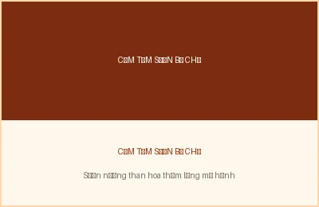
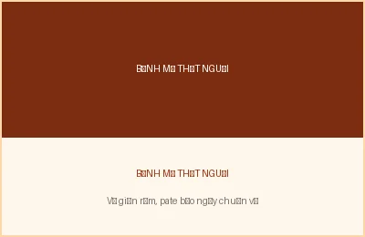
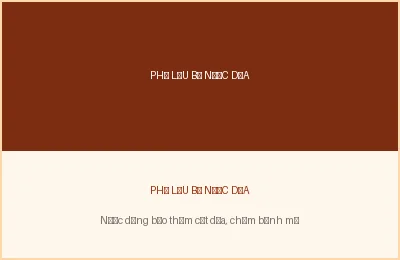
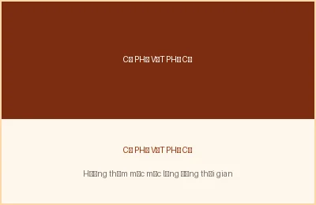

Video Teaser: Đậm đà Phong vị Cơm tấm Sườn nướng
Khám phá cận cảnh quá trình nướng sườn than hoa thơm phức và tiếng xèo xèo mỡ hành tại quán Cơm tấm Ba Ghiền. Xem chi tiết bài viết & tương tác »
Khám phá cận cảnh quá trình nướng sườn than hoa thơm phức và tiếng xèo xèo mỡ hành tại quán Cơm tấm Ba Ghiền. Xem chi tiết bài viết & tương tác »

Miếng sườn cốt lết dày dặn ướp mật ong nướng than hoa, ăn kèm bì giòn, chả trứng béo ngậy và nước mắm ớt kẹo đậm đà.
Khám phá quán ngon
Ổ bánh mì vỏ vàng ruộm giòn tan, kẹp chả lụa, bơ tươi, pate gan béo ngậy cùng đồ chua thanh mát chống ngấy.
Khám phá quán ngon
Lòng bò làm sạch hầm mềm trong nước cốt dừa béo ngậy, dậy mùi ngũ vị hương, chấm kèm nước mắm tắc chua ngọt.
Khám phá quán ngon
Cà phê pha trong ấm đất nung trên bếp than củi, hương vị mộc mạc lắng đọng lưu giữ ký ức Sài Gòn xưa hơn nửa thế kỷ.
Khám phá quán ngon
Dữ liệu món ăn và podcast mới được nạp không đồng bộ bằng fetch('media/media.json'), giúp tải tức thì trong 45ms mà không làm nháy trang.